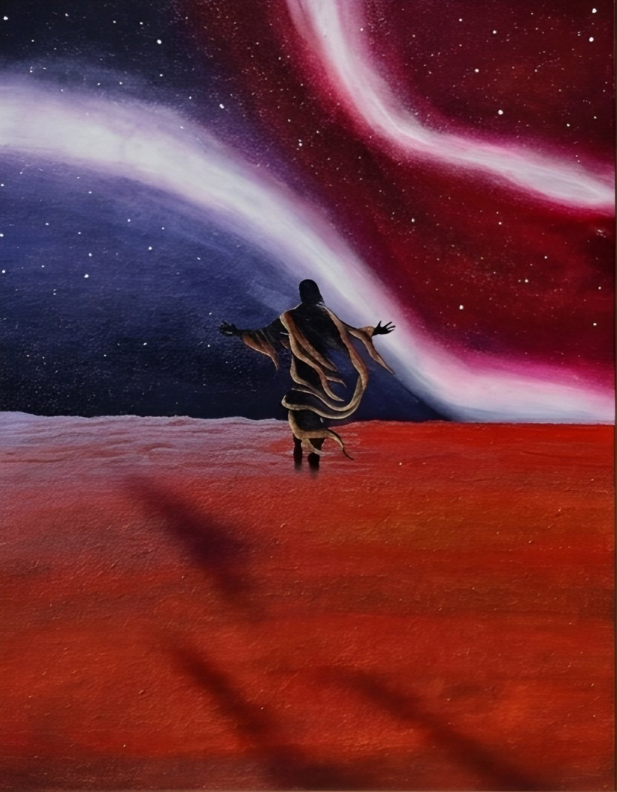
The Birth of the Primordial
The background is heavily inspired by the video game God of War Ragnarök.
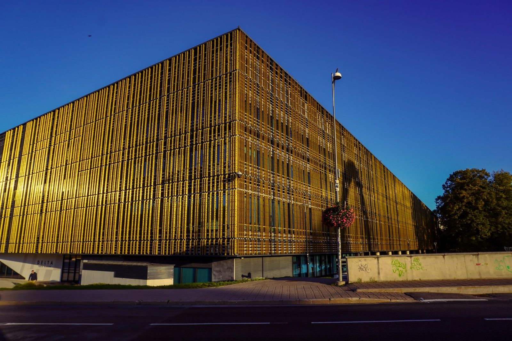
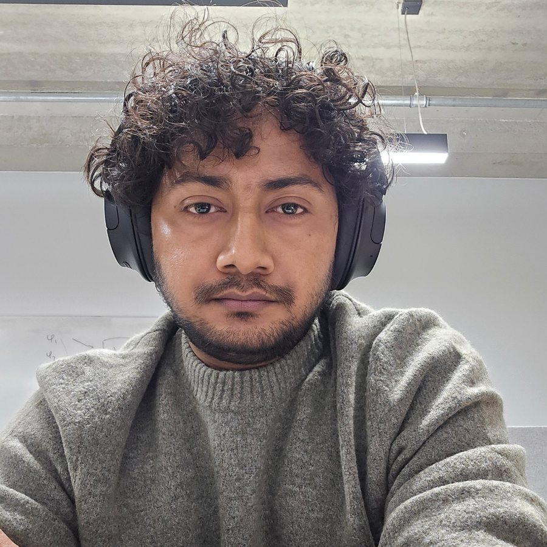
Doctoral research student in cryptography
Institute of Computer Science, University of Tartu, Estonia
I am a doctoral research fellow in the Institute of Computer Science at the University of Tartu, Estonia. I joined the university in September 2026 as a doctoral research student. I work under the supervision of Prof. Helger Lipmaa.
I am a cryptography enthusiast. I am interested in post-quantum cryptography and zero-knowledge proofs. I enjoy designing protocols for privacy-preserving systems. I also work on SIMD vectorized implementations using AVX2 and AVX-512.
Before Tartu, I was a research associate at AlgoBengal Research Labs. Before that, I was a research fellow at the R.C. Bose Centre for Cryptology and Security, Indian Statistical Institute, Kolkata.
I hold an M.Tech. in Cryptology and Security from the Indian Statistical Institute, Kolkata, and an M.Sc. in Pure Mathematics from the University of Calcutta. From my master's studies at ISI through the beginning of my Ph.D, I was mentored by Pratyay Mukherjee, with Soumit Pal providing valuable research guidance during my initial research.
Authors are listed in alphabetical order, as is the convention in cryptography.
Institute of Computer Science, University of Tartu, Estonia
AlgoBengal Research Labs, Kolkata, India
R.C. Bose Centre for Cryptology and Security, Indian Statistical Institute, Kolkata, India
University of Sydney, Australia
Master's thesis research with Dr. Sri Aravindakrishnan Thyagarajan.
Institute of Computer Science, University of Tartu, Estonia
Supervisor: Prof. Helger Lipmaa
Indian Statistical Institute, Kolkata, India
University of Calcutta, Kolkata, India
Mahishadal Raj College, Vidyasagar University, West Bengal, India
Paper presentation: Binary Kummer Lines and Binary Edwards Curves
Paper presentation: MATSE
Paper presentation: Traceable Bottom-Up Secret Sharing
Theatre has been at the center of my creative and personal life since childhood. I began acting in Bengali theatre at the age of seven. From 2007 until I moved to doctoral research in 2026, I was a member of the professional theatre troupe Suchetana Sanskritik Songstha in Haldia, India.
Over these nineteen years and more than twenty major productions, the stage was my workshop. I learned every part of a production: acting, set design, lighting and direction. In most productions I acted. In others I worked behind the scenes. I built stage sets, handled the technical work, and designed the lighting to shape the mood and tension of each scene.
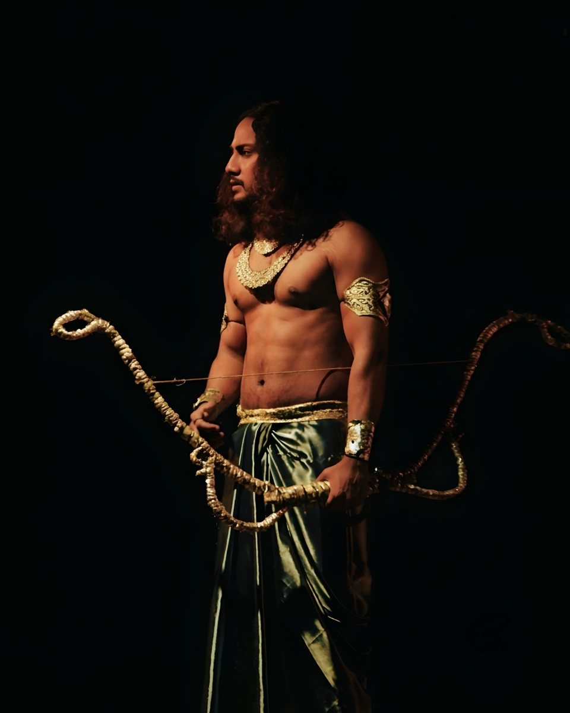
In 2021, I directed my first production, Ekalavya. I also played the major role of Arjun, and I designed and ran both the music and the lighting.
The story comes from the Indian epic, the Mahabharata. The style, however, moved far away from traditional retellings. It brought together Indian myth, Norse mythology, neofolk music and Western tragic opera.
Traditional versions praise Ekalavya's devotion to archery as the perfect example of a disciple's dedication. Our production saw it differently. His obsession became a tragic isolation that slowly destroyed his human relationships.
Ekalavya's wife, Basanti, was shaped as a parallel to Gretchen in Goethe's Faust. Faust abandons Gretchen in his search for power and knowledge. In the same way, Ekalavya spends days and nights alone in the forest, practicing to become the greatest archer in the world. Basanti is left alone and forgotten.
In a central scene, Basanti sings an original Bengali translation of Schubert's song Gretchen am Spinnrade (Gretchen at the Spinning Wheel). As she sings, she turns a real spinning wheel on stage. The turning wheel stands for endless waiting, confinement and grief. It stands against the rigid curve of her husband's bow.
A major theme was a parallel between the indigenous Adivasi and Nishada forest peoples of ancient India and the pagan tribes of pre-Christian Europe. The dominant Vedic order pushed aside and absorbed the Adivasi peoples, represented by Ekalavya's tribe. In a similar way, early Christianity in Europe suppressed its native pagan traditions. (I am not anti-Christian. I only observed a parallel.) The production explored how power, in different places and times, uses the same methods to erase nature-centered indigenous cultures.
The story stayed with the Mahabharata, but almost every visual and structural element came from Old Norse myth. This brought out the harsh, primal nature of power and authority.
The guru Dronacharya was framed as Odin, the one-eyed Allfather of Norse mythology, who gave up an eye in search of power and demands complete loyalty. On stage, the idol of Drona was sculpted as a one-eyed Odin. This linked Drona's favoritism toward Arjun with Odin's cold control over the fates of mortals.
To bring the ancient forest of the Adivasi lands together with Nordic antiquity, the score used Nordic neofolk and dark ambient music:

The background is heavily inspired by the video game God of War Ragnarök.
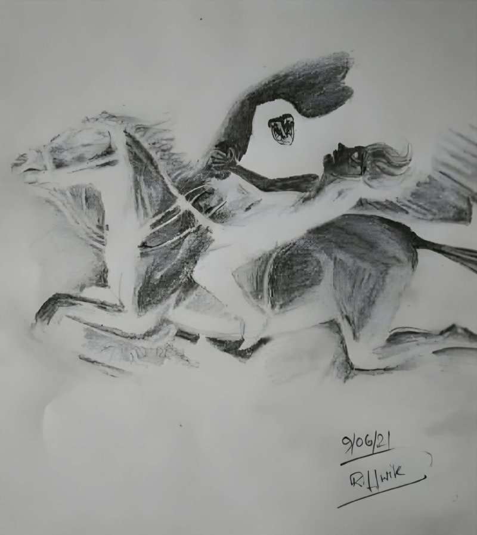
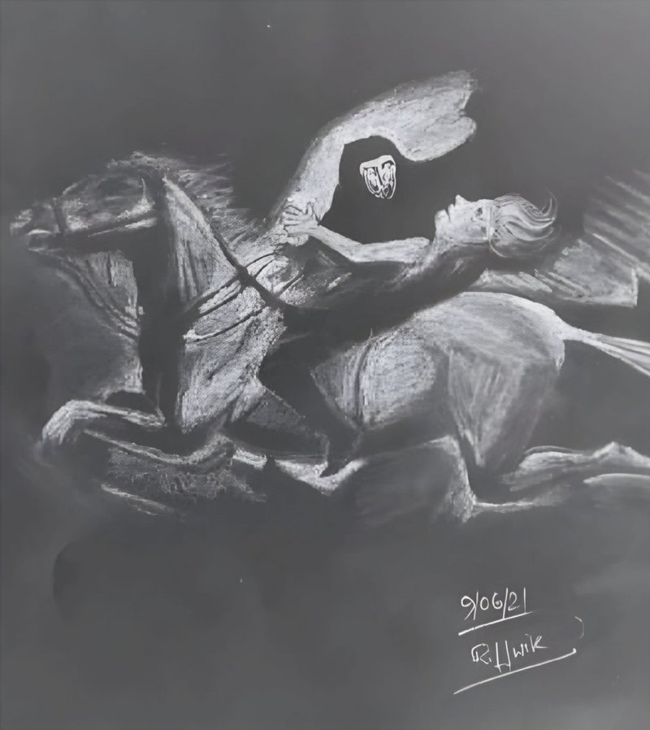
This work is heavily inspired by Erlkönig (Op. 1, D. 328), the landmark German art song (Lied) by Franz Schubert. Schubert composed it in 1815, setting the text of Johann Wolfgang von Goethe's famous dramatic ballad of 1782. He was just 18 years old. The song is celebrated as a masterpiece of the Romantic era for its intense drama, its psychological depth and its demanding piano accompaniment.
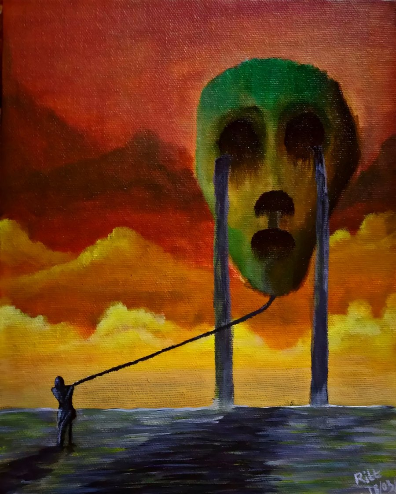
A work of dystopian surrealism. It is inspired by the work of the Polish artist Zdzisław Beksiński.
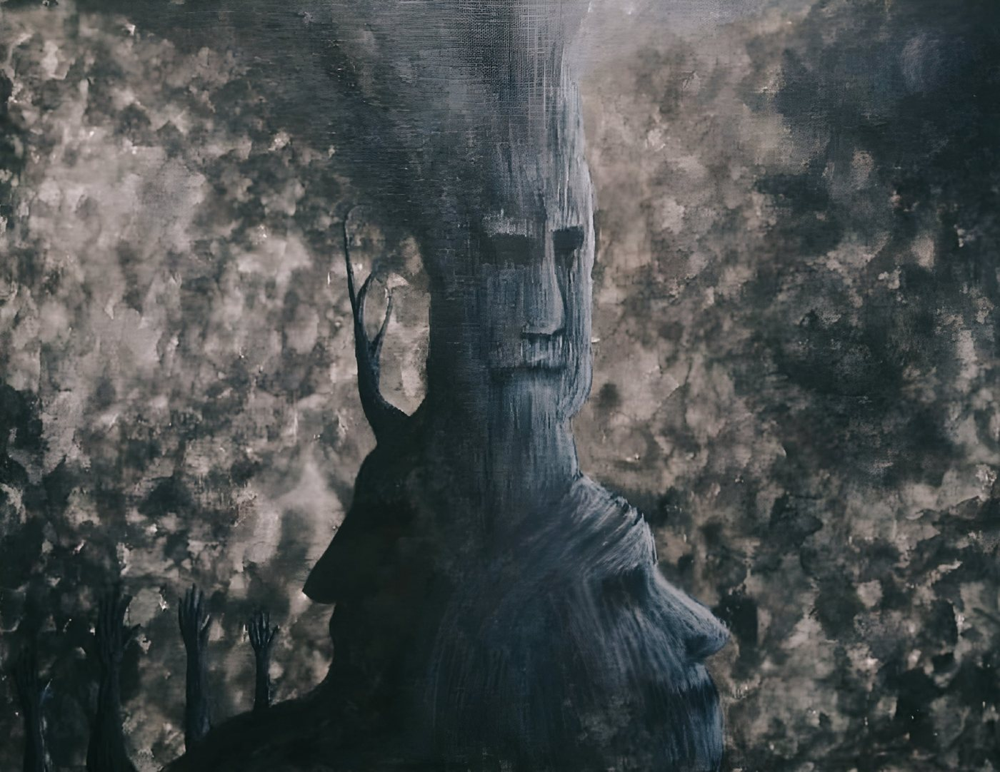
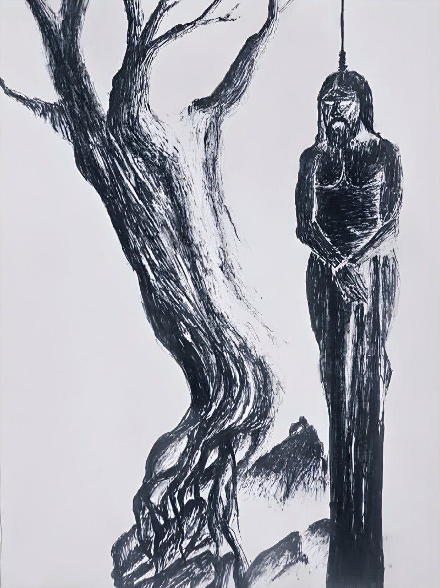
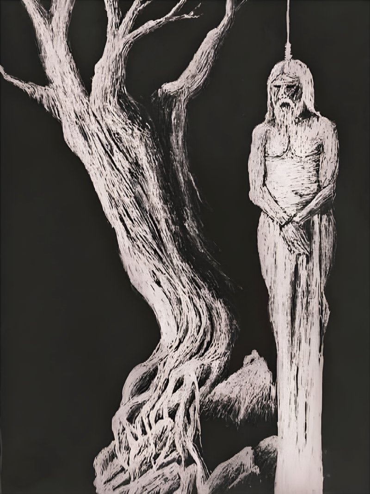
In Norse mythology, Odin hanging from Yggdrasil is one of the most profound tales of ritual self-sacrifice. It is told mainly in the Old Norse poem Hávamál ("The Sayings of the High One") from the Poetic Edda. In it, the Allfather willingly goes through a brutal, nine-day ordeal to unlock the cosmic secrets of the runes.
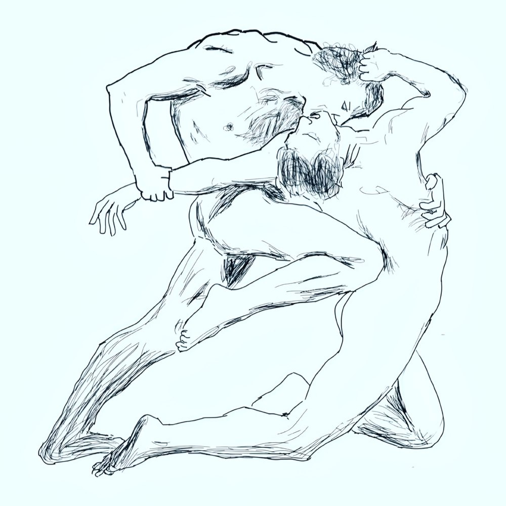
This sketch is inspired directly by the classic painting Dante and Virgil by William-Adolphe Bouguereau, which shows a scene from Dante's Inferno. In the original painting, two men are locked in a fight. The attacker is Gianni Schicchi, and the victim is Capocchio.
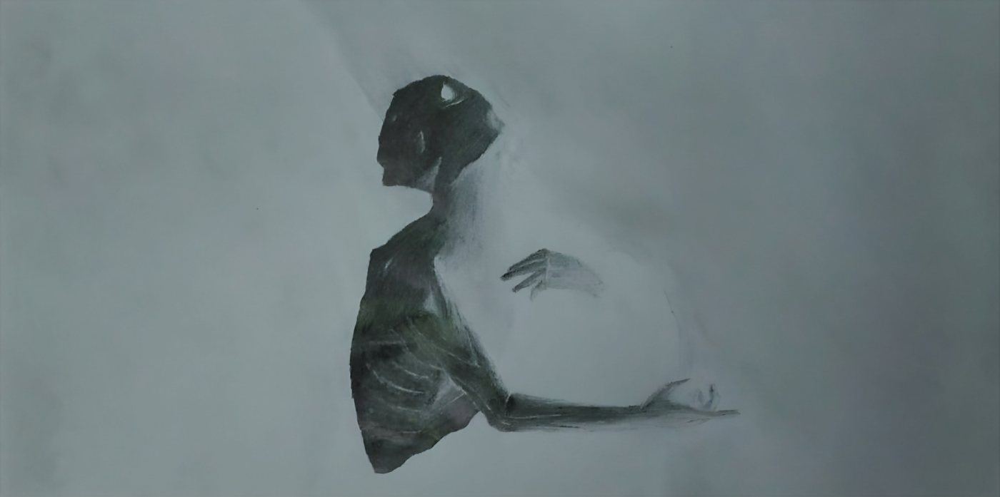
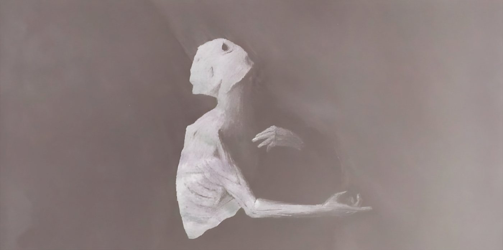
The title comes from an album and song of the same name by Nargaroth. The artwork takes direct inspiration from Zdzisław Beksiński.
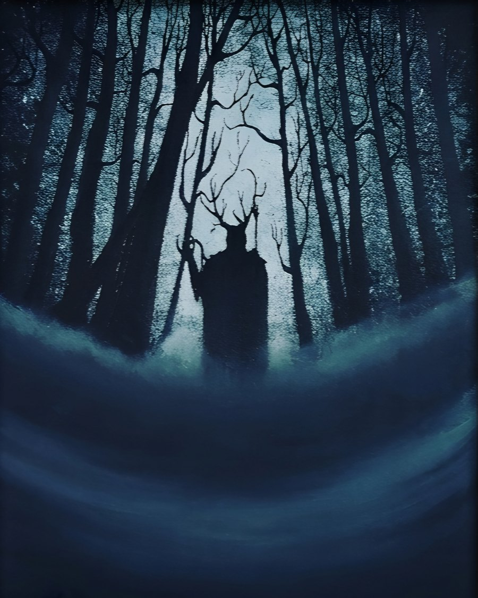
ᚺᚢᚱᚾᚨᛉ
Hurnaz is built on the ancient Proto-Germanic root for "horn", and here it means "the Horned One". The name is written in the runes of the Elder Futhark: ᚺ (Hagalaz), ᚢ (Uruz), ᚱ (Raidho), ᚾ (Nauthiz), ᚨ (Ansuz) and ᛉ (Algiz).
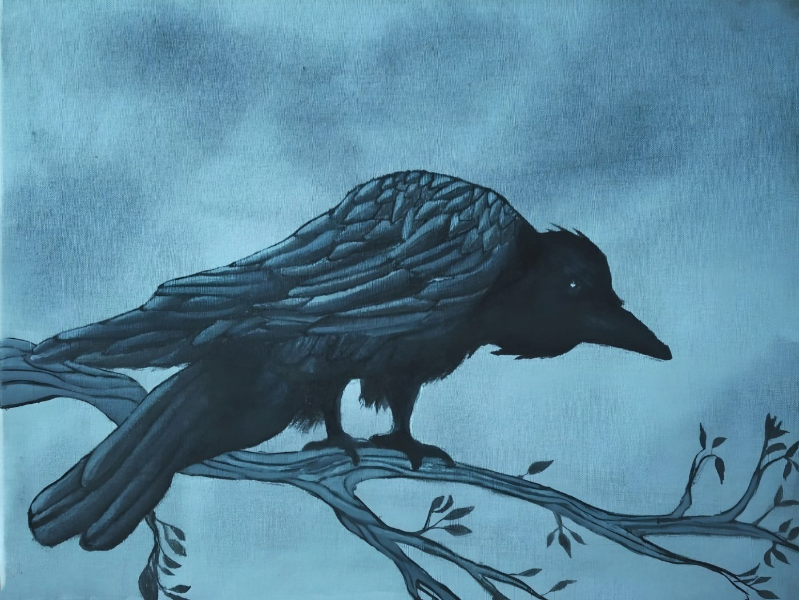
And the Raven, never flitting, still is sitting, still is sitting On the pallid bust of Pallas just above my chamber door; And his eyes have all the seeming of a demon’s that is dreaming, And the lamp-light o’er him streaming throws his shadow on the floor; And my soul from out that shadow that lies floating on the floor Shall be lifted—nevermore!
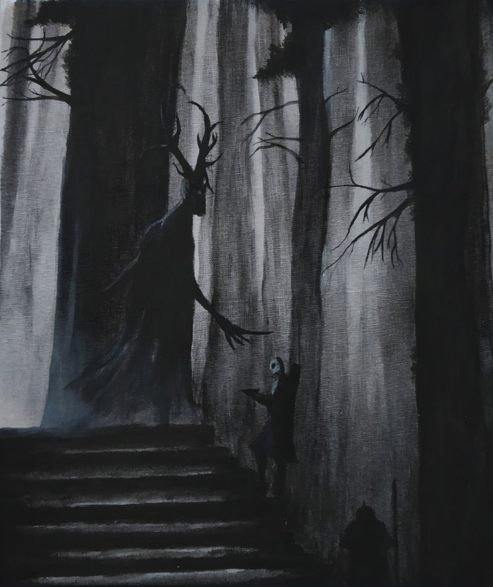
Cernunnos is the ancient Celtic "Lord of Wild Things". He was revered as a powerful god of nature, fertility and wealth. He is easily recognized by the stag antlers on his head, as on the famous Gundestrup Cauldron. He is often shown sitting cross-legged among forest animals, holding a sacred torc and a ram-horned serpent. These stand for the endless cycles of life, death and abundance.
Today he is a central figure in modern Neopagan traditions. He stands for the untamed wilderness and for masculine energy.
Email is the best way to reach me. Please use my university address first.